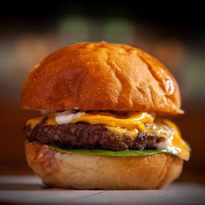

Hamburguer

Description
Una hamburguesa es un sándwich hecho a base de carne molida o de origen vegetal,
aglutinada en forma de filete cocinado a la parrilla
o a la plancha, aunque también puede freírse u hornearse.
Ingredients
- Pan
- Salsa
- Ceboola
- Carne
- Queso
- Tomate
- Lechuga
- Tocino
Steps
- Preparamos todos los ingredientes que vamos a necesitar para elaborar las hamburguesas:
1 kilo de carne picada, 1 cebolla, 1 huevo, 3 dientes de ajo, perejil fresco, sal, pimienta,
salsa de mostaza, 1 pieza de pan duro y aceite de oliva.
- Lo primero que debes hacer para conseguir una hamburguesas con una textura única es poner el pan duro
(puede ser del día anterior) en remojo: colócalo en un recipiente hondo y cúbrelo de agua natural. Deja que empape bien.
- Mientras se empapa bien el pan comenzamos a picar los ingredientes: primero la cebolla muy finita y luego lo dientes de ajo,
también en trozos pequeños.
- Continuamos picando finamente el perejil fresco. Una vez picados todos estos ingredientes, los reservamos.
- Salpimentamos la carne al gusto. Colocamos ésta en un recipiente lo suficientemente grande para que nos permita trabajar
luego cómodamente con ella.Escurrimos el pan y lo colocamos junto a la carne. Añadimos también el huevo, la cebolla y el ajo,
el perejil y la salsa de mostaza, que dará un sabor singular a este plato.
- Ha llegado el momento más divertido: el de mancharnos las manos. Hay que mezclar bien todos los ingredientes de manera que quede una masa homogénea.
- Una vez conseguida esa masa, hay que hacer bolas medianas con la carne, como si se tratasen de albóndigas, pero en lugar de dejarlas
completamente redondas, achatarlas un poco. Así conseguiremos la característica forma de las hamburguesas.
- En una sartén grande pon aceite a calentar. Cuando esté lo suficientemente caliente, añade las hamburguesas y fríelas hasta que se doren al gusto.
- Una vez estén fritas ve retirándolas del fuego y colócalas en un plato.
- Puedes tomarlas a la manera habitual: con pan, acompañada de una loncha de queso y algunas verduras y salsas,
o bien de una manera más ligera, sin pan ni acompañamientos, e incluso, puedes darle un toque gourmet con algún queso manchego,
de cabra o incluso queso azul y un poco de cebolla caramelizada.